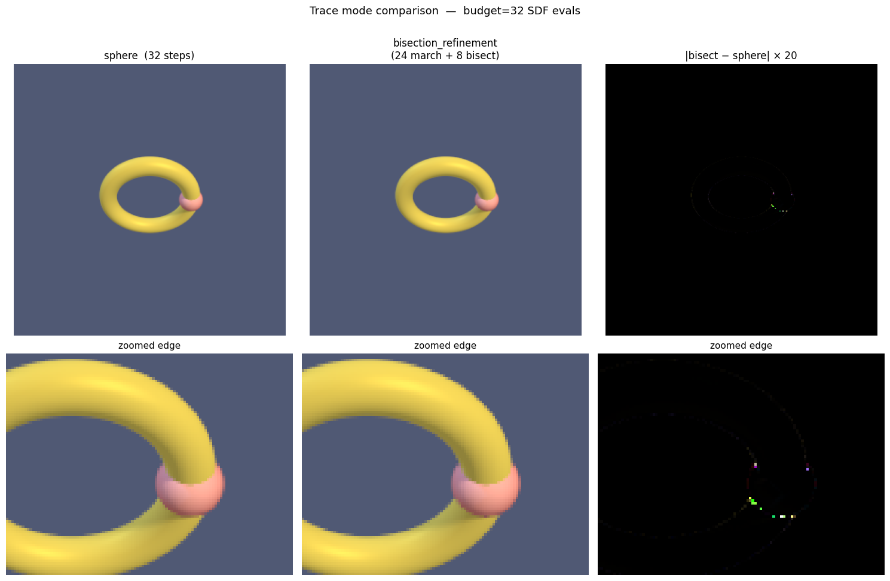
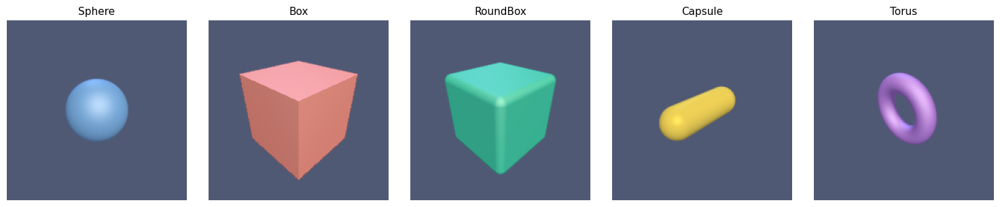
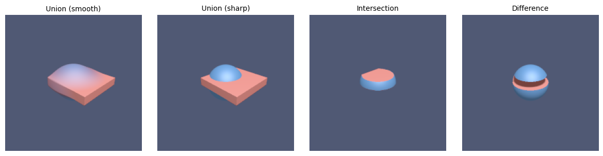
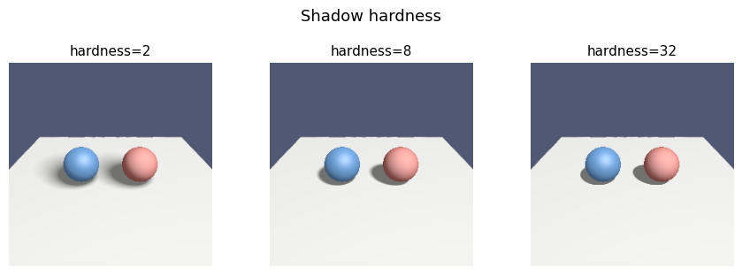
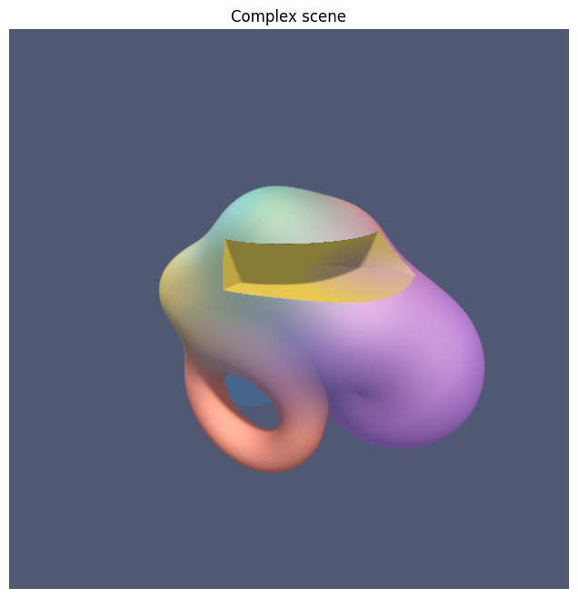
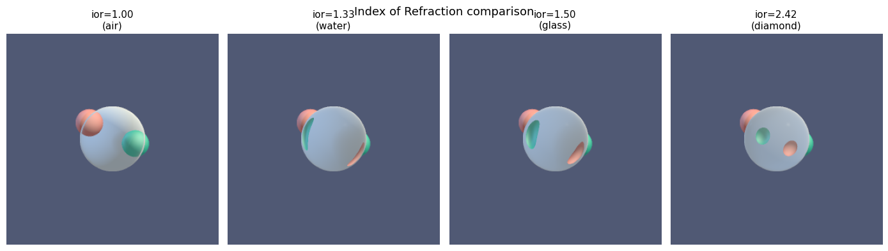
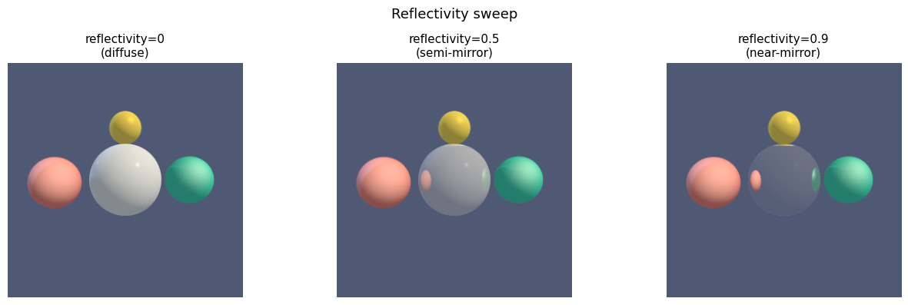
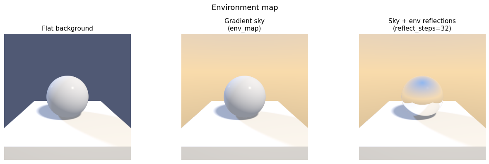

import jax.numpy as jnp
import matplotlib.pyplot as plt
from jaxcad.render import Material, raymarch, render_raymarched
from jaxcad.sdf.boolean import Difference, Intersection, Union
from jaxcad.sdf.primitives import Box, Capsule, RoundBox, Sphere, Torus
from jaxcad.sdf.transforms import TranslateRendering
# ── Colour palette & scene defaults ──────────────────────────────────────────
# Named materials and defaults used consistently across every example.
M = {
"blue": Material(color=[0.22, 0.50, 0.95], roughness=0.35),
"red": Material(color=[0.93, 0.26, 0.22], roughness=0.70),
"green": Material(color=[0.05, 0.72, 0.50], roughness=0.50),
"gold": Material(color=[0.97, 0.76, 0.12], roughness=0.20, metallic=1.0),
"purple": Material(color=[0.55, 0.25, 0.95], roughness=0.50),
"white": Material(color=[0.84, 0.84, 0.82], roughness=0.95),
"glass": Material(color=[0.92, 0.97, 1.0], roughness=0.05, opacity=0.1, ior=1.5),
}
bg = jnp.array([0.08, 0.10, 0.18]) # default scene background1. Trace mode: sphere vs bisection_refinement
Two tracing strategies are available via trace_mode:
| Mode | How it works |
|---|---|
"sphere" (default) |
Standard sphere tracing — advances by the SDF value each step, stops at the closest approach. |
"bisection_refinement" |
Same coarse march, then uses a Newton step to bracket the surface zero-crossing and bisects to pin the exact hit. |
Both modes are compared with the same total SDF-evaluation budget (32): - sphere: 32 march steps - bisection_refinement: 24 march steps + 8 bisection steps
Bisection produces more accurate hit positions — visible as sharper silhouettes and crisper specular highlights on thin or curved geometry.
import numpy as np
# Torus + small sphere: thin cross-section highlights hit-precision differences
torus = Torus(major_radius=0.9, minor_radius=0.18, material=M["gold"])
small = Translate(Sphere(radius=0.25, material=M["red"]), offset=jnp.array([0.9, 0.0, 0.0]))
scene_tm = Union((torus, small), smoothness=0.0)
cam_tm = jnp.array([0.0, 3.5, 3.5])
look_tm = jnp.array([0.0, 0.0, 0.0])
lights_tm = jnp.array([[1.0, 2.0, 1.0], [-0.8, 0.5, -0.6]])
lcolors_tm = jnp.array([[1.0, 0.92, 0.72], [0.25, 0.38, 0.70]])
# Both modes share the same total SDF-evaluation budget (32).
# sphere: 32 march steps
# bisection_refinement: 24 march steps + 8 bisection steps
BUDGET = 32
BISECT = 8
common_tm = {
"camera_pos": cam_tm,
"look_at": look_tm,
"light_dirs": lights_tm,
"light_colors": lcolors_tm,
"background_color": bg,
"resolution": (300, 300),
"aa_samples": 2,
"ambient": 0.04,
}
img_sphere = raymarch(scene_tm, trace_mode="sphere", max_steps=BUDGET, **common_tm)
img_bisect = raymarch(
scene_tm,
trace_mode="bisection_refinement",
max_steps=BUDGET - BISECT,
bisect_steps=BISECT,
**common_tm,
)
diff = np.abs(img_bisect.astype(float) - img_sphere.astype(float))
diff_amplified = np.clip(diff * 20, 0, 1)
# ── Side-by-side + zoomed crop ────────────────────────────────────────────────
fig, axes = plt.subplots(2, 3, figsize=(15, 10))
for ax, img, title in zip(
axes[0],
[img_sphere, img_bisect, diff_amplified],
[
f"sphere ({BUDGET} steps)",
f"bisection_refinement\n({BUDGET - BISECT} march + {BISECT} bisect)",
"|bisect − sphere| × 20",
],
):
ax.imshow(img, vmin=0, vmax=1)
ax.axis("off")
ax.set_title(title, fontsize=12)
# Crop: inner edge of the torus
r0, r1, c0, c1 = 100, 185, 125, 235
for ax, img in zip(axes[1], [img_sphere, img_bisect, diff_amplified]):
ax.imshow(img[r0:r1, c0:c1], vmin=0, vmax=1, interpolation="nearest")
ax.axis("off")
ax.set_title("zoomed edge", fontsize=11)
plt.suptitle(f"Trace mode comparison — budget={BUDGET} SDF evals", fontsize=13, y=1.01)
plt.tight_layout()
plt.show()
print(f"max pixel diff: {diff.max():.6f} mean: {diff.mean():.6f}")
max pixel diff: 0.126790 mean: 0.0000152. Primitives side-by-side
Each primitive rendered from the same camera position.
primitives = {
"Sphere": Sphere(radius=1.0, material=M["blue"]),
"Box": Box(size=[1.2, 1.2, 1.2], material=M["red"]),
"RoundBox": RoundBox(size=[1.0, 1.0, 1.0], radius=0.2, material=M["green"]),
"Capsule": Capsule(radius=0.5, height=1.0, material=M["gold"]),
"Torus": Torus(major_radius=0.9, minor_radius=0.3, material=M["purple"]),
}
fig, axes = plt.subplots(1, len(primitives), figsize=(3 * len(primitives), 3))
cam = jnp.array([3.0, 2.5, 3.0])
light_dirs = jnp.array([[1.5, 2.0, 1.0], [-1.0, 0.5, -0.8]])
light_colors = jnp.array([[1.0, 0.92, 0.75], [0.25, 0.35, 0.65]])
for ax, (name, sdf) in zip(axes, primitives.items()):
img = raymarch(
sdf,
camera_pos=cam,
light_dirs=light_dirs,
light_colors=light_colors,
background_color=bg,
resolution=(200, 200),
aa_samples=1,
)
ax.imshow(img, vmin=0, vmax=1)
ax.axis("off")
ax.set_title(name, fontsize=11)
plt.tight_layout()
plt.show()
3. Boolean operations
Union, intersection, and difference of two overlapping shapes.
s = Sphere(radius=1.0, material=M["blue"])
b = Translate(Box(size=[1.2, 0.2, 1.2], material=M["red"]), offset=jnp.array([0.6, 0.3, 0.0]))
scenes = {
"Union (smooth)": Union((s, b), smoothness=0.2),
"Union (sharp)": Union((s, b), smoothness=0.0),
"Intersection": Intersection((s, b), smoothness=0.0),
"Difference": Difference((s, b), smoothness=0.0),
}
fig, axes = plt.subplots(1, 4, figsize=(12, 3))
cam = jnp.array([4.0, 3.0, 4.0])
for ax, (name, scene) in zip(axes, scenes.items()):
img = raymarch(scene, camera_pos=cam, background_color=bg, resolution=(200, 200), aa_samples=2)
ax.imshow(img, vmin=0, vmax=1)
ax.axis("off")
ax.set_title(name, fontsize=10)
plt.tight_layout()
plt.show()
4. Shadow hardness
The shadow_hardness parameter controls shadow edge sharpness.
Low values give soft penumbra; high values give hard edges.
scene = Union(
(
Translate(Sphere(radius=0.6, material=M["blue"]), offset=jnp.array([-1.0, 0.0, 0.0])),
Translate(Sphere(radius=0.6, material=M["red"]), offset=jnp.array([1.0, 0.0, 0.0])),
Translate(
Box(size=[4.0, 0.1, 4.0], material=M["white"]), offset=jnp.array([0.0, -0.7, 0.0])
),
),
smoothness=0.0,
)
hardness_values = [2.0, 8.0, 32.0]
labels = [f"hardness={h:.0f}" for h in hardness_values]
fig, axes = plt.subplots(1, 3, figsize=(9, 3))
cam = jnp.array([0.0, 3.0, 5.0])
light = jnp.array([2.0, 4.0, 2.0])
for ax, h, label in zip(axes, hardness_values, labels):
img = raymarch(
scene,
camera_pos=cam,
light_dirs=light,
background_color=bg,
resolution=(250, 250),
shadow_hardness=h,
aa_samples=1,
)
ax.imshow(img, vmin=0, vmax=1)
ax.axis("off")
ax.set_title(label, fontsize=11)
plt.suptitle("Shadow hardness", fontsize=13, y=1.02)
plt.tight_layout()
plt.show()
5. Complex scene
A cluster of spheres smoothly blended together — the colour gradients at the joints are what make this visually striking.
blob = Union(
(
Sphere(radius=0.80, material=M["blue"]),
Translate(Sphere(radius=0.70, material=M["purple"]), offset=jnp.array([1.2, 0.2, 0.0])),
Translate(Sphere(radius=0.60, material=M["red"]), offset=jnp.array([0.5, 0.9, -0.7])),
Translate(Sphere(radius=0.50, material=M["gold"]), offset=jnp.array([-1.0, 0.4, 0.5])),
Translate(Sphere(radius=0.40, material=M["green"]), offset=jnp.array([0.1, 1.3, 0.3])),
),
smoothness=0.30,
)
blob = Difference(
(
blob,
Translate(Box(size=[1.0, 0.3, 1.0], material=M["gold"]), offset=jnp.array([0.9, 1.0, 0.4])),
),
smoothness=0.001,
)
rects = Union(
(
Translate(
Torus(major_radius=0.9, minor_radius=0.3, material=M["red"]),
offset=jnp.array([-0.2, -1.1, 0.4]),
),
Translate(
Torus(major_radius=0.3, minor_radius=0.9, material=M["purple"]),
offset=jnp.array([1.5, -0.5, -0.6]),
),
Translate(
Torus(major_radius=0.9, minor_radius=0.3, material=M["blue"]),
offset=jnp.array([-1.2, -0.8, -0.5]),
),
),
smoothness=0.0,
)
scene = Union((blob, rects), smoothness=0.15)
render_raymarched(
scene,
camera_pos=jnp.array([3.5, 2.5, 5.0]),
look_at=jnp.array([0.2, 0.2, 0.0]),
light_dirs=jnp.array([[1.5, 3.0, 1.5], [-2.0, 1.0, -0.5]]),
light_colors=jnp.array([[1.0, 0.88, 0.65], [0.30, 0.45, 0.80]]),
background_color=bg,
resolution=(600, 600),
shadow_hardness=16.0,
aa_samples=1,
title="Complex scene",
)
plt.show()
6. Glass Refraction
When ior > 1.0, rays obey Snell’s law at entry and exit:
- Primary ray hits the front face → bends into the material.
- Interior trace finds the back face (using
−sdfas the distance field). - Ray bends back into air and continues through the scene.
The Fresnel effect (Schlick approximation) brightens edges at grazing angles.
IOR sweep — air → water → glass → diamond.
red_ball = Translate(Sphere(radius=0.65, material=M["red"]), offset=jnp.array([-1.1, 0.5, -3.0]))
green_ball = Translate(
Sphere(radius=0.65, material=M["green"]), offset=jnp.array([1.1, -0.5, -3.0])
)
cam_glass = jnp.array([0.0, 0.5, 5.5])
look_glass = jnp.array([0.0, 0.0, 0.0])
lights_g = jnp.array([[1.5, 2.0, 1.0], [-1.0, 0.5, -0.8]])
lcolors_g = jnp.array([[1.0, 0.90, 0.70], [0.20, 0.35, 0.60]])
def render_glass(ior, res=300):
scene = Union(
(
Sphere(
radius=1.0,
material=Material(color=[0.92, 0.97, 1.0], roughness=0.05, opacity=0.04, ior=ior),
),
red_ball,
green_ball,
),
smoothness=0.0,
)
return raymarch(
scene,
camera_pos=cam_glass,
look_at=look_glass,
light_dirs=lights_g,
light_colors=lcolors_g,
resolution=(res, res),
background_color=bg,
refract_steps=48,
max_steps=80,
aa_samples=2,
ambient=0.04,
)
ior_cases = [
(1.00, "ior=1.00\n(air)"),
(1.33, "ior=1.33\n(water)"),
(1.50, "ior=1.50\n(glass)"),
(2.42, "ior=2.42\n(diamond)"),
]
fig, axes = plt.subplots(1, 4, figsize=(14, 4))
for ax, (ior, label) in zip(axes, ior_cases):
ax.imshow(render_glass(ior), vmin=0, vmax=1)
ax.axis("off")
ax.set_title(label, fontsize=11)
plt.suptitle("Index of Refraction comparison", fontsize=13)
plt.tight_layout()
plt.show()
7. Mirror Reflections
Set reflectivity > 0 on a material and pass reflect_steps to raymarch. The reflected ray is sphere-traced for the given number of steps; if it hits geometry it shades that surface, otherwise it falls back to the background.
reflectivity blends between the direct surface shading (0) and a perfect mirror (1). It is fully differentiable — jax.grad flows through it.
# ── Reflection sweep: reflectivity 0 → 0.5 → 0.9 ────────────────────────────
# Scene: coloured balls around a central chrome sphere.
ball_l = Translate(Sphere(radius=0.65, material=M["red"]), offset=jnp.array([-1.8, 0.0, 0.5]))
ball_r = Translate(Sphere(radius=0.65, material=M["green"]), offset=jnp.array([1.8, 0.0, 0.0]))
ball_t = Translate(Sphere(radius=0.55, material=M["gold"]), offset=jnp.array([0.0, 1.6, -1.5]))
cam_r = jnp.array([0.0, 0.8, 5.5])
look_r = jnp.array([0.0, 0.0, 0.0])
lights_r = jnp.array([[1.5, 2.0, 1.0], [-1.0, 0.5, -0.8]])
lcolors_r = jnp.array([[1.0, 0.90, 0.70], [0.20, 0.35, 0.60]])
reflectivity_cases = [
(0.0, "reflectivity=0\n(diffuse)"),
(0.5, "reflectivity=0.5\n(semi-mirror)"),
(0.9, "reflectivity=0.9\n(near-mirror)"),
]
fig, axes = plt.subplots(1, 3, figsize=(13, 4))
for ax, (refl, label) in zip(axes, reflectivity_cases):
sphere = Sphere(
radius=1.0,
material=Material(
color=[0.85, 0.88, 0.92],
roughness=0.05,
reflectivity=refl,
),
)
scene = Union((sphere, ball_l, ball_r, ball_t), smoothness=0.0)
img = raymarch(
scene,
camera_pos=cam_r,
look_at=look_r,
light_dirs=lights_r,
light_colors=lcolors_r,
background_color=bg,
resolution=(300, 300),
max_steps=64,
reflect_steps=32,
aa_samples=2,
ambient=0.04,
)
ax.imshow(img, vmin=0, vmax=1)
ax.axis("off")
ax.set_title(label, fontsize=11)
plt.suptitle("Reflectivity sweep", fontsize=13)
plt.tight_layout()
plt.show()
8. Environment Maps (HDR backgrounds & reflections)
Pass an env_map array of shape (H, W, 3) to raymarch to replace the flat background_color with a direction-dependent environment:
- Primary misses sample the map using the ray direction.
- Reflection misses sample using the reflected ray direction, giving correct env-lit mirror surfaces.
Any real HDR file works:
import imageio.v3 as iio
env = jnp.asarray(iio.imread("studio.hdr"), dtype=jnp.float32)The helper make_gradient_sky() generates a procedural sky gradient so you can try the feature without an external file.
from jaxcad.render import make_gradient_sky
# Procedural sky — swap this for jnp.asarray(iio.imread("your_file.hdr")) to
# use a real HDR image.
sky = make_gradient_sky(
sky_color=[0.18, 0.42, 0.88],
horizon_color=[0.95, 0.72, 0.42],
ground_color=[0.22, 0.18, 0.14],
resolution=(256, 512),
)
# ── Three panels: flat bg | sky bg | sky bg + mirror reflection ──────────────
chrome = Sphere(
radius=1.0,
material=Material(
color=[0.90, 0.92, 0.95],
roughness=0.05,
reflectivity=0.85,
),
)
pedestal = Translate(
Box(size=[2.4, 0.3, 2.4], material=M["white"]),
offset=jnp.array([0.0, -1.2, 0.0]),
)
scene_env = Union((chrome, pedestal), smoothness=0.0)
cam_e = jnp.array([0.0, 1.2, 5.0])
look_e = jnp.array([0.0, 0.0, 0.0])
lights_e = jnp.array([[1.0, 2.0, 1.0], [-0.8, 0.4, -0.6]])
lcolors_e = jnp.array([[1.0, 0.92, 0.80], [0.25, 0.38, 0.70]])
common_e = {
"camera_pos": cam_e,
"look_at": look_e,
"light_dirs": lights_e,
"light_colors": lcolors_e,
"resolution": (300, 300),
"max_steps": 64,
"aa_samples": 2,
"ambient": 0.06,
}
img_flat = raymarch(scene_env, background_color=bg, **common_e)
img_sky = raymarch(scene_env, env_map=sky, **common_e)
img_refl = raymarch(scene_env, env_map=sky, reflect_steps=32, **common_e)
fig, axes = plt.subplots(1, 3, figsize=(13, 4))
for ax, img, title in zip(
axes,
[img_flat, img_sky, img_refl],
["Flat background", "Gradient sky\n(env_map)", "Sky + env reflections\n(reflect_steps=32)"],
):
ax.imshow(img, vmin=0, vmax=1)
ax.axis("off")
ax.set_title(title, fontsize=11)
plt.suptitle("Environment map", fontsize=13)
plt.tight_layout()
plt.show()